Apresentação do Projecto
O Survivor é um simulador de uma sociedade multi-agente que tem como objectivo testar as formas de acção de uma sociedade num determinado ambiente no sentido de evitar a sua extinção.
O simulador implementa um sistema não hierárquico. Isto é, não existe no sistema um agente que cordena os restantes. A ideia
é que os agentes tenham tarefas bem definidas e sejam capazes de tomar decisões não só a nivel individual mas em prol da sociedade.
Arquitectura do Sistema
O sistema está arquitecturado num "mundo" (ambiente) que contém recursos de diversos tipos. Este mundo é habitado por agentes com diversas funções. Existe uma base no mundo que representa a "casa" dos agentes. É nesta casa que os agentes armazenam recursos, comunicam (assincronamente, deixando informação na base que agentes mais tarde podem consultar) e criam novos agentes.
O ambiente/mundo é estático, no sentido em que não aparecem novos recursos ao longo do tempo. No entanto, os recursos existentes vão desaparecendo à medida que vão sendo consumidos. Partimos também do
pressuposto que os agentes podem navegar por todo o ambiente, não havendo caminhos fixos para permitir a deslocação dos mesmos. O ambiente é
limitado, sendo um "quadrado" de dimensão fixa. Para navegação, um agente pode avançar para qualquer uma das 8 casas que rodeiam a em que se encontra.
Para um agente interagir com um recurso tem que se encontrar na mesma casa que este. O mesmo acontece com a interacção com a base. Os agentes têm assim visão limitada do mundo, conhecendo apenas o estado da casa onde se encontram e das casas que o rodeiam.
Agentes
Existem 2 tipos de agentes:
- Seeker
- Gatherer
Agentes do tipo seeker são responsáveis por procurar recursos. Agentes do tipo gatherer são responsáveis pela colheita dos recursos e o seu transporte
para a base.
Existem 3 tipos de gatherers:
- Lamberjack: Agente responsável por colher madeira e transportá-la para a base.
- Miner: Semelhante ao anterior, mas para pedra.
- Hunter: Semelhante, mas para comida.
Cada agente tem ainda um nível de energia associado, que é diminuindo ao longo do tempo e em função da actividade que este esteja a executar. Além disso,
os agentes do tipo Gatherer têm um workload associado, que representa a quantidade do recurso que este transporta no instante corrente.
Cada agente é responsável ainda pela sua própria alimentação, garantindo a sua sobrevivência, e pela criação e novos agentes (visto não haver um agente criador).
Assim, pode qualquer agente decidir pela reprodução, que gera um novo utilizador. O tipo do novo utilizador é gerado arbitráriamente em função das necessidades da civilização.
Além dos agentes acima referidos, existe ainda o agente Base, onde são depositados os recursos da civilização e as localizações de recursos conhecidos.
Existe ainda o agente World, que mantém conhecimento de todo o sistema: localização e conteúdo de resourses, agentes e da base. Este Agente serve principalmente para disponibilização para a interface gráfica e para dar info aos agentes quando eles procuram recursos pelo mundo (num dado raio de visao dos agentes).
voltar ao topo
Análise e Design
Para a análise e design do sistema utilizámos a metodologia MAzE, que nos permitiu, de forma estruturada, fazer este processo de forma sustentada.
1 - Objectivos
O diagrama seguinte especifica a hierarquia de objectivos que o sistema pretende alcançar. Centra-se no Objectivo Base, que é a sobrevivência, e divide-se nos sub-objectivos que nos permitem atingir este.
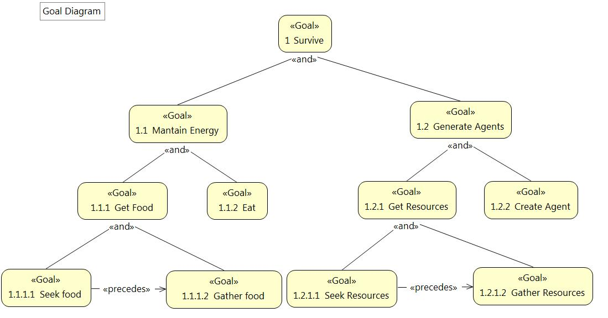
Figura 1 - Diagrama de Objectivos
Identificamos claramente no diagrama acima dois sub-objectivos principais: Manter o nível de energia e aumentar a população. Para o nível de energia,
é essencial comer, que é a acção que restitui energia a um agente. Desta forma, o "gathering" de comida é também um sub-objectivo deste. voltar ao topo
No outro lado temos a criação de agentes, que precisa dos restantes recursos (madeira e pedra). Desta forma, temos o "gathering" destes recursos como
sub-objectivo da criação de agentes.
2 - Casos de Uso
Outro conseguimos extrair alguns casos de uso, representantes de interacções entre entidades do sistema. Desta forma, identificámos os seguintes:- Seek Resource (no qual englobamos o Seek Food, por este ser uma especificidade relativamente à procura de recursos em geral);
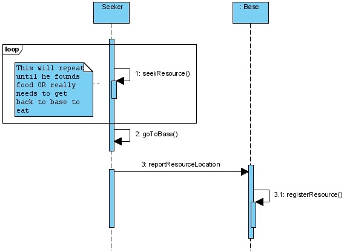
Figura 2 - Diagrama de Sequência para o caso de uso Seek Resource
- Gather Resource (no qual englobamos o Gather Food, por este também neste caso ser uma especificidade);
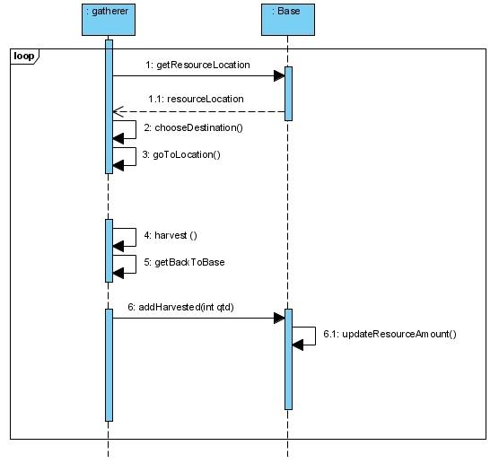
Figura 3 - Diagrama de Sequência para o caso de uso Gather Resource
- Eat (o consumo de comida e respectivo aumento de energia);
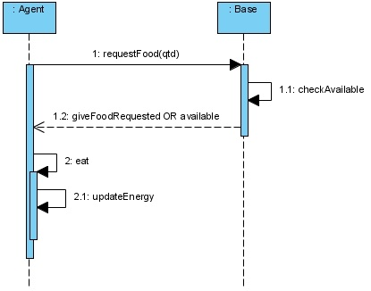
Figura 4 - Diagrama de Sequência para o caso de uso Eat
- Create Agent (a criação de um novo agente).
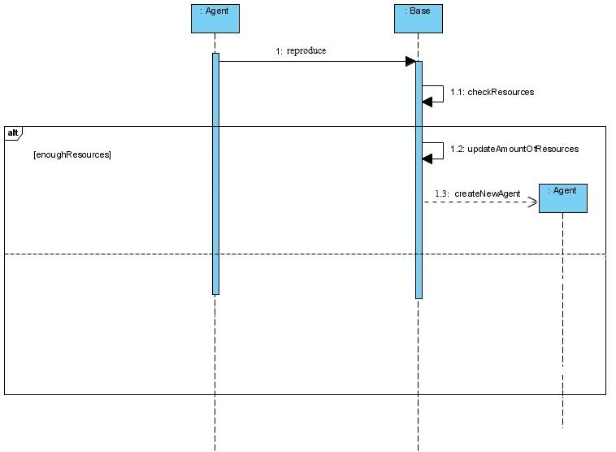
Figura 5 - Diagrama de Sequência para o caso de uso Create Agent
voltar ao topo
3 - Papeis
Identificámos quatro papeis principais no nosso projecto:
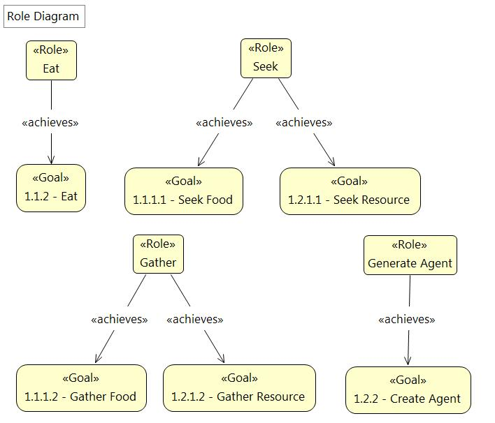
Figura 6 - Diagrama de Papeis
voltar ao topo
Tasks
A cada role temos associada uma tarefa, que é executada em representação do papel:
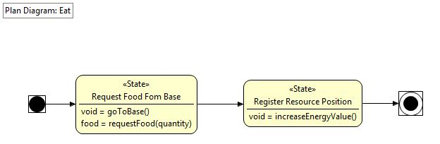
Figura 7 - Diagrama de Tarefas para o papel Eat
Esta tarefa representa o papel de comer.
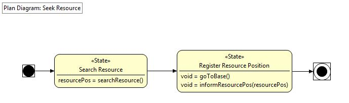
Figura 8 - Diagrama de Tarefas para o papel Seek Resource
Esta tarefa representa o papel de Seek Resource.
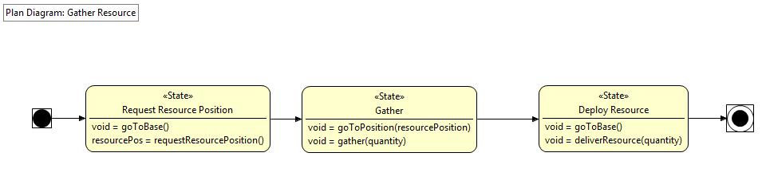
Figura 9 - Diagrama de Tarefas para o papel Gather Resource
Esta tarefa representa o papel de Gather Resource.
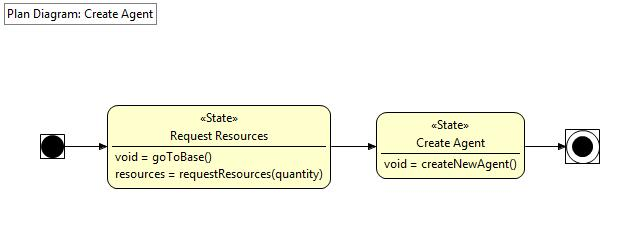
Figura 10 - Diagrama de Tarefas para o papel Create Agent
Esta tarefa representa o papel de Seek Resource.
Os agentes que definiremos no nosso ambiente serão responsáveis por executar estas tarefas, em função dos papeis que desempenharem.
voltar ao topo
DESIGN
4 - Classes de Agentes
A partir dos papeis que existem no mundo, definimos agentes necessários para desempenhar os papeis existentes. Assim, estes são os agentes definidos
com base nessa estrutura:
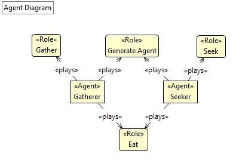
Figura 11 - Diagrama de Agentes
Estes são os agentes que desempenham os papeis definidos para os objectivos. No entanto, há agentes que interagem no processo que, sem desempenhar nenhum papel específico, existem no nosso sistema. No diagrama de classes que apresentamos de seguida temos consciência desses agentes, por exemplo no caso do agente base, com o qual são feitas bastantes interacções mas este não representa um role específico, em função dos objectivos.
voltar ao topo
5 - Diagrama de Classes
Aqui apresentamos o nosso diagrama de classes de alto nível. Neste caso podemos ver as classes auxiliares como resources e afins que são essenciais para o
nosso mundo.
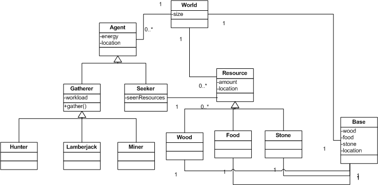
Figura 12 - Diagrama de Classes
Aqui já conseguimos ver as entidades do nosso sistema e as suas relações. Assim temos um mundo com uma lista de agentes, outra de resources e uma base. Os Resources podem ser Wood, Food e Stone, e mantém a posição onde se encontram e a respectiva quantidade.Os agentes podem ser do tipo Gatherer ou Seeker, onde os Gatherers são Hunters, Miners ou Lamberjacks. O Seeker tem aínda uma lista de Resources, que representam os resources que este encontra e envia depois para a Base. A Base tem um Resource de cada tipo (Wood, Food e Stone) que representam os resources gerais da sociedade.
voltar ao topo
6 - Configuração do Sistema
A imagem abaixo apresenta a configuração geral do nosso sistema. Nela podemos ver a Base no centro do mundo. Temos vários resources espalhados pelo mundo, de diferentes tipos.
Vimos também os diferentes agentes no mundo:
- Temos n Seekers (neste caso 2) que andam pelo mundo à procura de resources;
- Um Miner a recolher pedra num resource desse tipo;
- Um Hunter a recolher comida num resource do tipo Food;
- Os restantes agentes na base.
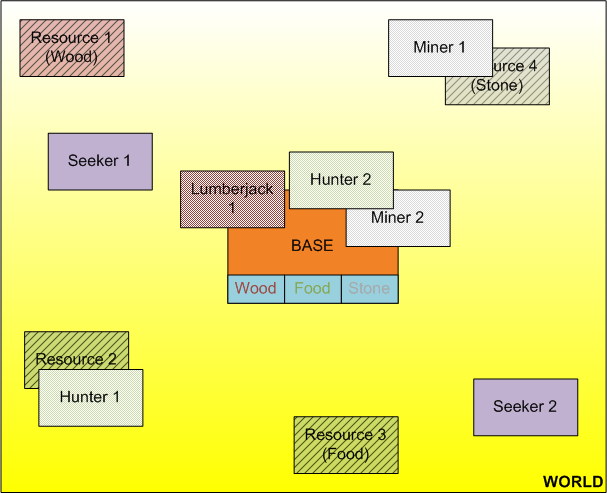
Figura 13 - Diagrama de Configuração do Sistema
A configuração usada na apresentação final apresentava um mundo quadrado com 51 "células" de lado. Inicializámos o mundo com 5 seekers, 2 hunters, 1 lumberjack e 1 miner.
Quanto aos recurso, colocámos distribuidos aleatóreamente pelo mundo 10 recursos de cada tipo, com um valor de quantidade de 200 cada. voltar ao topo
A base, colocada no centro do mapa, inicialmente começa com quantidade 1000 de cada recurso. Inicialmente, a quantidade de resources que ela conhece a localização é 0. Este valor incrementa sempre que
um seeker reporta um recurso encontrado.
Ontologia
Uma ontologia representa, talvez da melhor forma, o conhecimento de um sistema. Abaixo apresentamos alguns diagramas da ontologia representativa do nosso sistema, mostrando a Hierarquia de Classes e um Grafo de Propriedades Partilhadas pelas diferentes classes da ontologia.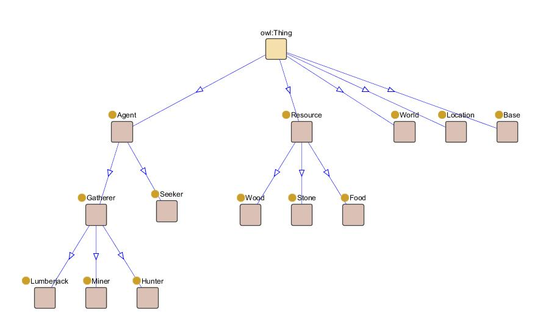
Figura 14 - Diagrama de Hierarquia de Classes na Ontologia
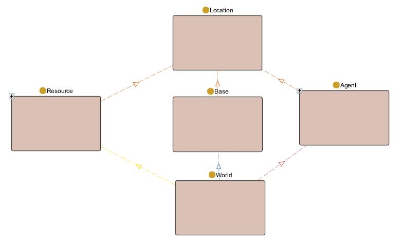
Figura 15 - Grafo de Propriedades Partilhadas pelas Classes da Ontologia
Estes diagramas demonstram de uma forma mais visual a extruturação do conhecimento do nosso sistema. É neste formato que o conhecimento vai ser armazenado e tratado por este.
Ontologia para Comunicação
Utilizamos ainda ontologia na comunicação dos agentes por mensagens FIPA. Nessa Ontologia representamos pedidos de informação ("existem recursos na localização x?", por exemplo), passagem de informação ("Encontrei este recurso nesta posição") ou pedidos de acção ("Reproduz")
O vocabolário representa os diferentes conceitos, predicados e acções utilizados na ontologia:
ONTOLOGY_NAME = "SurvivalOntology";
//Concepts
LOCATION
RESOURCE
FOOD
STONE
WOOD
PERSON
BASE
//Slots
XPOS
YPOS
AMOUNT
REMAINING
SEEN_RESOURCES
ENERGY
PERSON_LOCATION
WORKLOAD
TYPE
//Predicates
RESOURCE_IS_LOCATED
IS_LOCATED_RESOURCE
IS_LOCATED_LOCATION
//Actions
REQUEST_FOOD
REQUEST_FOOD_RESPONSE
REQUEST_SEEN_RESOURCES
REQUEST_SEEN_RESOURCES_RESPONSE
REQUEST_RESOURCE_OF_LOCATION
REQUEST_RESOURCE_OF_LOCATION_RESPONSE
SEND_AGENT_INFO
SEND_BASE_INFO
SEND_FOUND_RESOURCES
REQUEST_RESOURCE_AMOUNT_OF_LOCATION
REQUEST_RESOURCE_AMOUNT_OF_LOCATION_RESPONSE
UPDATE_BASE_RESOURCES
REPRODUCE
A utilização de ontologia na comunicação aumentou o grau de dificuldade na implementação, mas permitiu um desenvolvimento mais orientado ao conhecimento e descentralizado
voltar ao topo
Interface Gráfica
Para a execução do projecto foi necessário implementar um agente World, já descrito anteriormente. Este agente não tem qualquer poder de decisão. Apenas fornece informação sobre recursos quando tal lhe é pedida pelos agentes.
Para isso o World contém toda a informação do jogo, como a localização dos recursos, dos agentes e da base. Este agente tem o único propósito de possuir os dados actualizados do mundo para a comunicação com a interface gráfica e responder, quando requerido por outros agentes, sobre informação sobre o ambiente.
A GUI (Graphical User Interface) foi criada a pensar na representação simples e funcional do programa. Assim sendo está representado neste os vários agentes, os recursos no mundo e a base (headquarters). Foi desenvolvido em Java com recurso à ferramenta Slick, que é uma biblioteca de desenvolvimento de jogos 2D baseado no LWJGL - Lightweight Java Game Library. Através desta ferramenta foi possível a implementação elementar da nossa simulação.
O Slick é um sistema muito simples e relativamente fácil de implementar, contendo 3 funções principais: a init, onde se colocam a inicializações iniciais dos dados; a render, que trata do desenho dos elementos; e a função update, onde é tratada toda a lógica do jogo.
No nosso caso, na função update encontram-se alguns mecanismos de sincronização com os recursos e com os agentes existentes no mundo, para posterior actualização na interface gráfica do utilizador.
Toda o grafismo é baseado em formas geométricas simples e imagens/texturas.
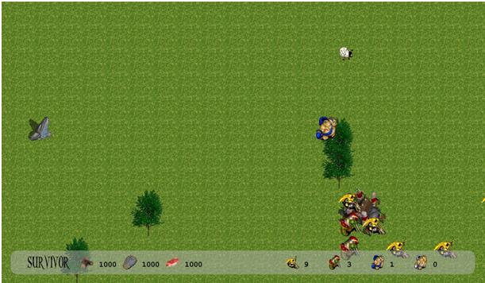Figura 16 - Exemplo de vizualização gráfica
Como é possível ver na Figura 16, temos os vários seekers, que são as personagens amarelas, os hunters, que são vermelhos, os lumberjack's, os azuis e os miners que se encontram a cinzento. Na parte inferior do ecrã podemos encontrar várias informações da nossa simulação, concretamente a quantidade de recursos na base e a quantidade de agentes de cada tipo no mundo.
Quanto aos recursos, é possível ver a pedra, a madeira, que é representado pelas árvores, e a ovelha que indica a existência de comida numa posição.
voltar ao topo
Organização do Código
O código encontra-se organizado por packages, tendo a seguinte estrutura:
- survivor
- agents
- graph
- ontology
- actions
A package agents tém as classes dos agentes, cada um com as funções especificas setup e action, para inicialização e especificação das acções dos agentes.
A package graph mantém a class da interface gráfica, responsável por desenhar todo o grafismo do jogo.
A package Ontology mantém as classes da ontologia usada na comunicação dos agentes. Tem duas classes especiais: SurvivorVocabulary - Contém os nomes das diferentes actions, concepts, slots e predicates usados na ontologia; SurvivorOntology - Intanciação da ontologia. Mantém um singleton com a mesma de forma a que seja chamado sempre objecto pelos diferentes agentes.
A package actions mantém as classes das acções da ontologia. Esta separação foi feita apenas para simplificação estrutural.
voltar ao topo
Conclusão
Este site representa todo o processo de estruturação, análise e design do sistema implementado. A análise e design seguiram a motologia MAzE que, por estar direccionada para agentes facilitou substancialmente este processo.
Foi desenvolvida a ontologia para gestão do conhecimento do sistema em Protegé, que contém mais estrutura que a que nos é possível apresentar por diagramas.
Numa análise critica do sitema, podemos concluir que, uma vez que os recursos são esgotáveis, a civilização acaba sempre por se extinguir. Verificámos as dificuldades da civilização não ter um lider que estabelece tarefas. O facto de cada agente poder decidir quando procriar, que comida ir buscar, sem haver alguém a fazer essa gestão com conhecimento geral leva a situações como vários agentes a irem buscar o mesmo recurso, que se esgota estretanto e os restantes fizeram a viagem e voltaram de mão vazias; reproduções simultâneas, que causam um arrombo grande aos recursos da civilização; etc. Isto demonstra claramente que é difícil definir comportamento de grupo com poder distribuido por todos os intervenientes, o que torna esta simulação um exercicio de análise interessante para comportamento em sociedade.
voltar ao topo
Referências:
Scott A. DeLoach, Mark F. Wood and Clint H. Sparkman - Multiagent Systems Engineering
Scott A. DeLoach - Analysis and Design using MaSE and agentTool
Russell, S. & Norvig, P. (2002) Artificial Intelligence: A Modern Approach
Project Agent Tool (http://agenttool.cis.ksu.edu/)